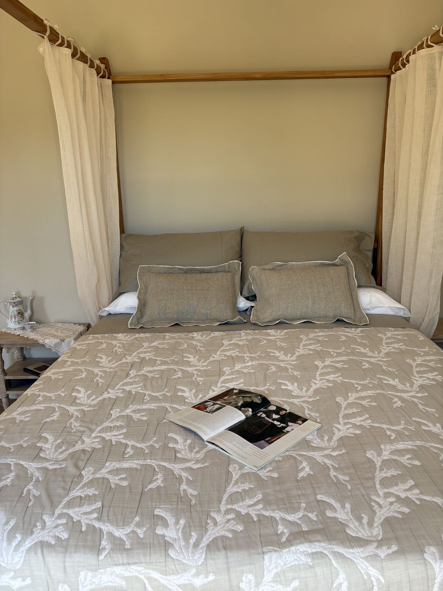

The Suite
Suite Ginestra
The largest room in the house: a beamed ceiling, a canopy bed with linen curtains, a small sitting area with a sofa and a large French window opening onto the Gallura countryside.
Request availability